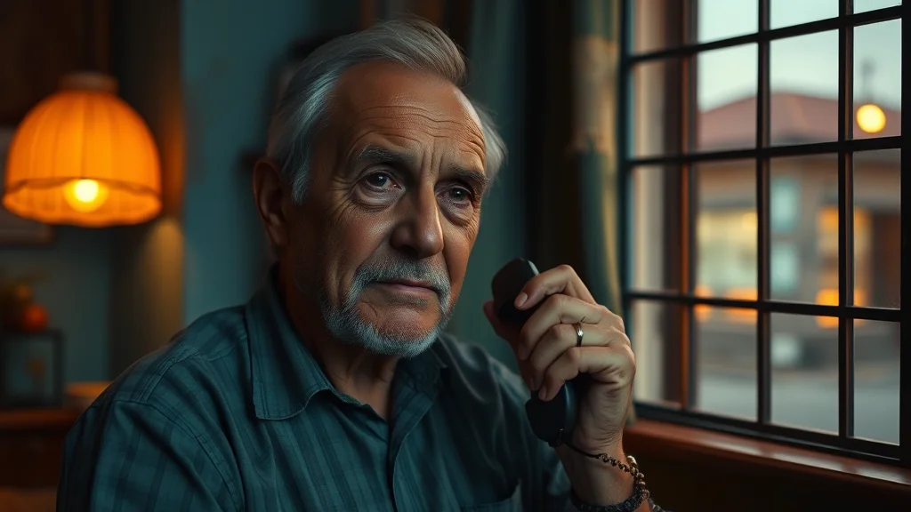

Vas a vivir este caso dos veces: primero como el comerciante que reporta desde su celular; después como el comandante que recibe la alerta y debe decidir. Todo con la tecnología real del ecosistema FastAnalytics.
Un comerciante en el suroccidente de la ciudad recibe un panfleto extorsivo. Desde Telegram, envía fotos del panfleto, un video del sospechoso captado por su cámara, y un audio describiendo lo ocurrido. Todo geolocalizado automáticamente.

En menos de 2 segundos, el sistema procesa simultáneamente imagen, video, audio y texto. Detrás no hay solo gestión de datos: corren más de 20 modelos de analítica avanzada y machine learning integrados en el flujo — el mismo motor de MileInvestiga que investiga desde fraude financiero hasta redes criminales.
"Ayer como a las seis de la tarde llegó un tipo en moto, dejó un sobre en la puerta del local y se fue rápido. El sobre tenía un papel pidiendo dos millones o queman la tienda. Ya van tres vecinos que les pasa lo mismo."
Con los datos recolectados se hace seguimiento a las redes criminales espacio-temporales para entender el contexto del territorio: quién opera, dónde y con qué frecuencia.
Las autoridades reciben la alerta con toda la evidencia procesada. El mapa de situación muestra el contexto completo de la zona.
Casos como este se replican en todo el país: Tumaco, Buenaventura, Cúcuta, San Andrés. Cada reporte de AlejoSeguro activa a GusCoordina, el Puesto de Mando Unificado que coordina la respuesta interinstitucional en tiempo real. Seis agentes especializados articulan a las instituciones convocadas mientras el incidente está en curso.
El reporte que enviaste como ciudadano activa un Puesto de Mando Unificado: seis agentes especializados coordinan a las instituciones en terreno, en tiempo real, mientras el incidente está en curso. Haz clic en cada agente para ver qué hace.
Cada agente coordina una capacidad distinta del Puesto de Mando Unificado en tiempo real
9 fases que transforman los incidentes que acabas de coordinar en decisiones organizacionales anticipativas, a corto y mediano plazo. Haz clic en cada fase.
Cada fase articula capacidades del Estado para la toma de decisiones estratégicas de seguridad
Fuiste el comerciante que reportó y el comandante que decidió. Así se articula la seguridad basada en datos: del celular del ciudadano al escritorio presidencial.
Nuestro fundador diseñó, desplegó y propuso las estrategias basadas en sus modelos. Generales y alcaldes dieron las ruedas de prensa. Estos fueron los resultados.
Los modelos detrás de este ecosistema se aplicaron en operaciones reales de policía y gobierno, y quedaron documentados en publicaciones académicas revisadas.
PhD en Ingeniería Matemática (EAFIT) · Humphrey Fellow (University of Minnesota) · Becario Fulbright · 20+ años en analítica de seguridad ciudadana liderando equipos de más de 80 analistas · Autor de dos libros sobre seguridad y analítica de datos.
Predecimos dónde y cuándo actuar.
Convertimos datos en decisiones. Usted actúa antes, no después.